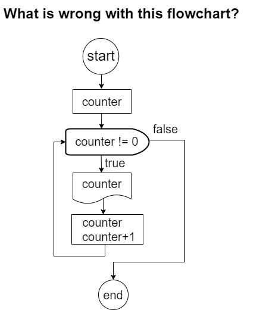
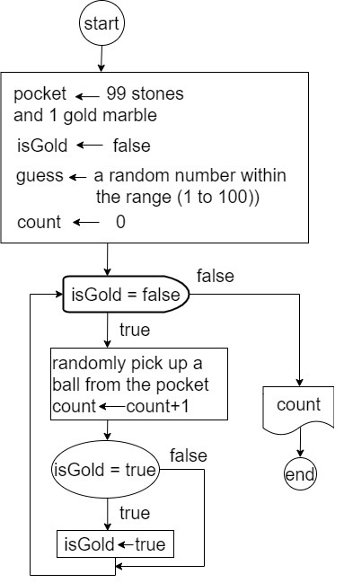

🌝 Lecture Highlights
🌚 pondering01: Variations of FOR Loop
variation-1: counting down
🌚 FlowChart Clinic: No More Oops! in Loops
check the answer
It forgets to initialize a variable that is used in the condition of the loop.
Remember that the first time the condition is checked is before starting the execution of the body of the loop.

check the answer
It is off by 1 in the number of iterations, i.e., it prints a line consists of 11.
Typically this is due to a mismatch between the condition of the loop and the initialization of the variables used in the condition.
To avoid such types of errors, it is often convenient to test the loop with a small ovalues for the variables. In the example above, if we check the loop by printing 1 star, instead of 10 (by substituting 10 with 1 in the condition of the loop), we immediately notice that the loop would print 2 stars, instead of 1.
check the answer
It forgets to update the variables appearing in the condition of the loop.
The loop will never terminate.
🌚 pondering03: Flag--While's Awsome Helper
Example of using a Flag
One day you encountered the Aladdin's lamp. You wished for a gold marble.
He agrees, but there is a bonus rule for the wish. He puts the marble in a pocket, mixed with another 99 stone marbles.
He keeps counting how many marbles you have taken out. After you take the gold marble, he will give you equal number of gold marbles to the stone marbles you have taken out.
Draw the flowchart for this game.The initialization of the flowchart is offered as below:
check the answer
